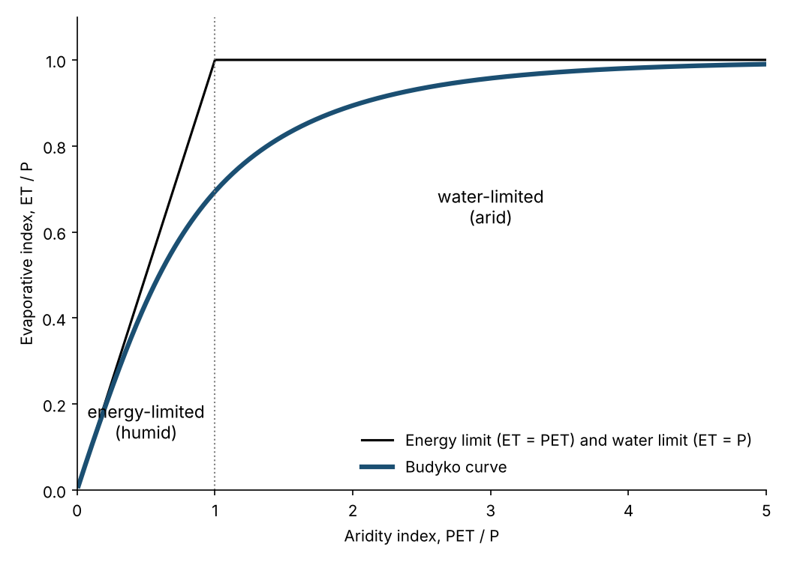
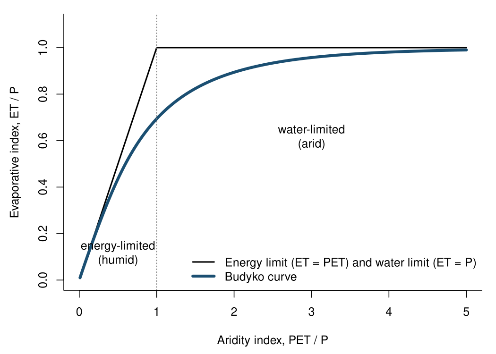
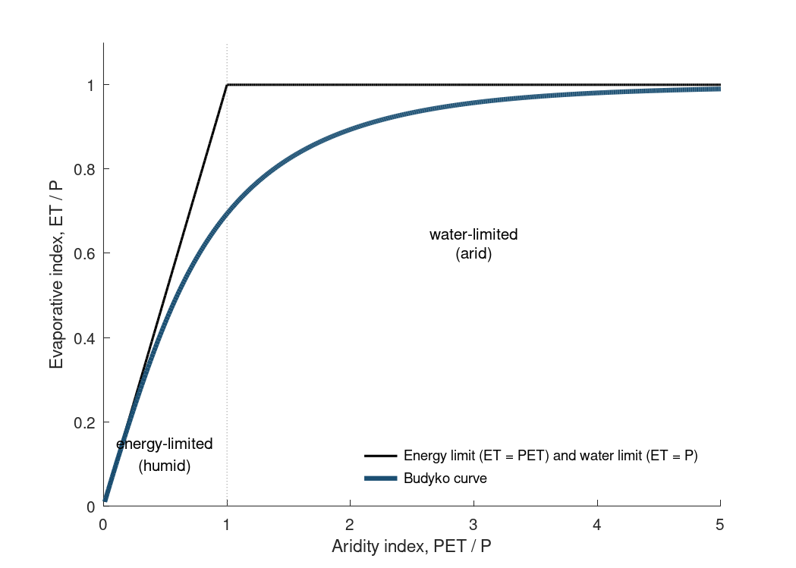

Chapter 1 · Water on Earth
Budyko curve: evaporative index vs dryness index
Budyko curve with energy- and water-limited regimes.
Source: Chapter 1/5 drafts; Budyko (1974) functional form
Uses the Budyko (1974) form ET/P = sqrt(x tanh(1/x)(1 - exp(-x))).
No external data file: values are small and embedded in the code.

Code: budyko_curve.py · image: figure_python.png

"""Chapters 1 and 5 - The Budyko curve (conceptual).
Evaporative index (ET/P) as a function of aridity index (PET/P), using Budyko's (1974) equation
plus the energy limit (ET = PET) and the water limit (ET = P). The authors asked for their own version of this
figure; the scatter of real catchments needs a catchment dataset and is not included."""
import numpy as np
import matplotlib.pyplot as plt
x = np.linspace(0.01, 5, 500) # aridity index PET/P
budyko = np.sqrt(x * np.tanh(1 / x) * (1 - np.exp(-x)))
energy_limit = np.minimum(x, 1) # ET/P cannot exceed PET/P ...
water_limit = np.ones_like(x) # ... or 1 (all precipitation)
fig, ax = plt.subplots(figsize=(7, 5))
ax.plot(x, np.minimum(x, 1), "k-", lw=1.5, label="Energy limit (ET = PET) and water limit (ET = P)")
ax.plot(x, budyko, color="#1b4f72", lw=3, label="Budyko curve")
ax.axvline(1, color="grey", ls=":", lw=1)
ax.text(0.5, 0.12, "energy-limited\n(humid)", ha="center", fontsize=11)
ax.text(3, 0.62, "water-limited\n(arid)", ha="center", fontsize=11)
ax.set_xlim(0, 5); ax.set_ylim(0, 1.1)
ax.set_xlabel("Aridity index, PET / P"); ax.set_ylabel("Evaporative index, ET / P")
ax.legend(loc="lower right", frameon=False)
ax.spines[["top", "right"]].set_visible(False)
fig.tight_layout(); fig.savefig("figure_python.png", dpi=150)

Code: budyko_curve.R · image: figure_r.png

# Chapters 1 and 5 - The Budyko curve (conceptual): ET/P vs PET/P (Budyko 1974) with energy and water limits
x <- seq(0.01, 5, length.out = 500)
budyko <- sqrt(x * tanh(1 / x) * (1 - exp(-x)))
png("figure_r.png", width = 1050, height = 750, res = 150)
par(mar = c(4.5, 4.5, 1, 1), bty = "l")
plot(x, pmin(x, 1), type = "l", lwd = 2, xlim = c(0, 5), ylim = c(0, 1.1),
xlab = "Aridity index, PET / P", ylab = "Evaporative index, ET / P")
lines(x, budyko, col = "#1b4f72", lwd = 4)
abline(v = 1, lty = 3, col = "grey50")
text(0.5, 0.12, "energy-limited\n(humid)"); text(3, 0.62, "water-limited\n(arid)")
legend("bottomright", bty = "n", lwd = c(2, 4), col = c("black", "#1b4f72"),
legend = c("Energy limit (ET = PET) and water limit (ET = P)", "Budyko curve"))
dev.off()

Code: budyko_curve.m · image: figure_matlab.png

% Chapters 1 and 5 - The Budyko curve (conceptual): ET/P vs PET/P (Budyko 1974) with energy and water limits
x = linspace(0.01, 5, 500);
budyko = sqrt(x .* tanh(1 ./ x) .* (1 - exp(-x)));
fig = figure('Position',[100 100 700 500]); hold on
h1 = plot(x, min(x, 1), 'k-', 'LineWidth', 1.5);
h2 = plot(x, budyko, 'Color', [0.106 0.31 0.447], 'LineWidth', 3);
plot([1 1], [0 1.1], ':', 'Color', [0.5 0.5 0.5]);
text(0.5, 0.12, {'energy-limited','(humid)'}, 'HorizontalAlignment','center');
text(3, 0.62, {'water-limited','(arid)'}, 'HorizontalAlignment','center');
xlim([0 5]); ylim([0 1.1]); box off
xlabel('Aridity index, PET / P'); ylabel('Evaporative index, ET / P');
legend([h1 h2], {'Energy limit (ET = PET) and water limit (ET = P)','Budyko curve'}, 'Location','southeast', 'Box','off');
print(fig, '-dpng', '-r150', 'figure_matlab.png');